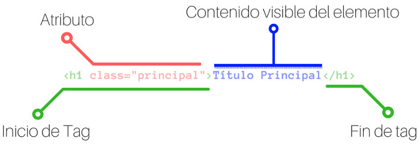

Atributos
src="ruta del documento html". Documento que se mostrará en el frame.
Indicaremos la dirección, URL, del documento que debe mostrarse en la zona. Si no se pone este atributo el area reservada estará vacía.
name="nombre". Asigna un nombre al marco. es un atributo
importante puesto que cuando queramos
cargar una página en un marco mediante un enlace,
tendremos que especificar el nombre del marco.
Noresize. Este atributo no posee valores. Simplemente se coloca o no se coloca.
Si lo insertamos impide que le frame se pueda redimensionar.
Si no lo ponemos el marco se podrá redimensionar
scrolling="yes / no / auto".
Asigna si el marco tendrá o no una barra de desplazamiento.
marginwidth="número de pixels". Indicaremos, en número de pixels,
el tamaño de los márgenes izquierda y derecha.
marginheight="número de pixels".
Indicaremos, en número de pixels, el tamaño de los márgenes superior e inferior.
Ejemplo:
